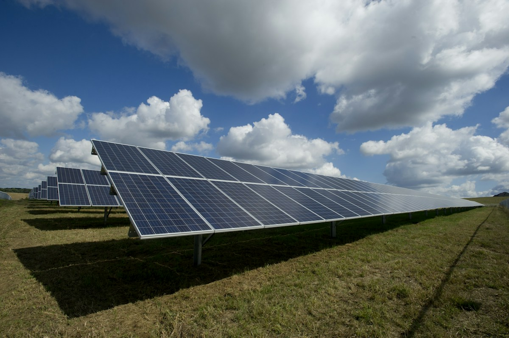

01 / Energy & sustainabilityMunicipal energy
Municipal energy
planning & audits
Supporting municipal energy plans through data collection and demand assessment, alongside energy audits for commercial, residential and industrial buildings.
Project overview
Work at Multiscope Solution includes organizing energy-use information, assessing demand and documenting findings to support energy planning and efficiency measures.